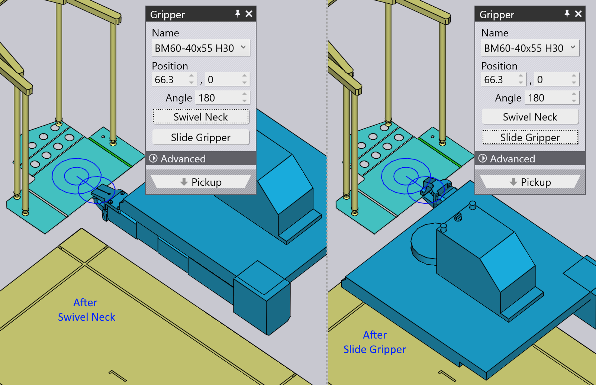

從分配器拾取
小零件使用_機械夾鉗_處理，TecZone Bend中也稱為_卡爪夾鉗_。如果零件小於A4尺寸，TecZone Bend自動切換到使用卡爪夾鉗。此夾鉗只能從_分配站_（也稱爲_板坯分配器_）拾取零件。這些參數影響此拾取流程：
-
分配器在機台單元中的位置和方向。
-
零件在分配器上的方向。
-
卡爪夾鉗在零件上的位置和方向。用於編輯所有這些設置的面板如下所示 - 它們都透過以邏輯順序通往其他面板的向上/向下導航連結相互連接：

如上圖所示，只需在模擬中點擊不同對象也可以訪問這些面板：
-
若要打開分配器面板，請點擊分配器。
-
若要編輯零件在分配器上的方向，請點擊分配器上的板坯（先將目前級設定為拾取，方法是點擊導航器中的P列）。
-
若要編輯夾鉗在零件上的抓取位置，請點擊夾鉗。
分配器面板
點擊分配器以打開分配器面板。將零件TecZone Bend放置在分配器的_對齊角_，並將吸盤夾鉗臂置於零件的轉角。您可以使用此面板編輯臂配置和分配器位置。

-
使用位置、角度和提升設定可設置分配器的位置和方向，使其與在單元中的實際位置匹配。
拾取面板
拾取面板用於設置分配器上零件的方向。當您旋轉或翻轉零件時，TecZone Bend將選擇一個適當的_平面_，以抓取零件（因為夾鉗始終只能從一個方向進入）。您可以點擊分配器上的板坯來顯示此面板。

-
操作零件 按鈕用於將零件旋轉90度。在上圖中，零件沒有處於理想的方向，以便針對分配器的轉角調基準。經過幾次_旋轉_操作後，效果更好：

-
如果分配器上的板坯以其他方式翻轉，您可以使用 翻轉零件 按鈕來翻轉模型以匹配：

對齊任何邊緣
有時，這些90°旋轉可能還不夠。假設您想要對齊目標邊緣（如下圖所示）與分配器上的Z參考：

點擊對齊稜邊並選擇彈出的選單上的選項 Z 向的校準。然後，點擊目標邊緣附近的零件。該邊緣現在與分配器參考對齊。結果會顯示出來 below[1]在對夾鉗位置和方向進行一些調整後，以更好地適應這種新的對齊方式）：

夾鉗面板
夾鉗面板用於將夾鉗定位在零件上，切換到不同的夾鉗，並配置夾鉗拾取零件時的旋轉軸和滑動軸。
-
使用名稱清單從此機台可用的卡爪夾鉗清單中選擇一個新夾鉗。當您瀏覽清單中的名稱時，會顯示夾鉗的縮略圖：

-
使用位置 和角度設定來設置夾鉗相對於_夾持平面_中心點的位置和方向。此中心由上圖中的雙圓圈表示。這是上圖中的同一個夾鉗，顯示調整好位置和角度後的狀態：

-
使用翻轉卡爪 和移動按鈕可以更改夾鉗的頸部和滑動配置。以下是從上面的第一個配置開始的結果，並應用這些操作：
 -
使用真空抓爪 按鈕將零件切換為使用真空夾鉗。這實際上是對零件的完全_重新計算_。不再使用分配器，而是從托盤中取出零件。折彎順序、改抓操作和存儲模式都被重新計算，從而更適合真空夾鉗。